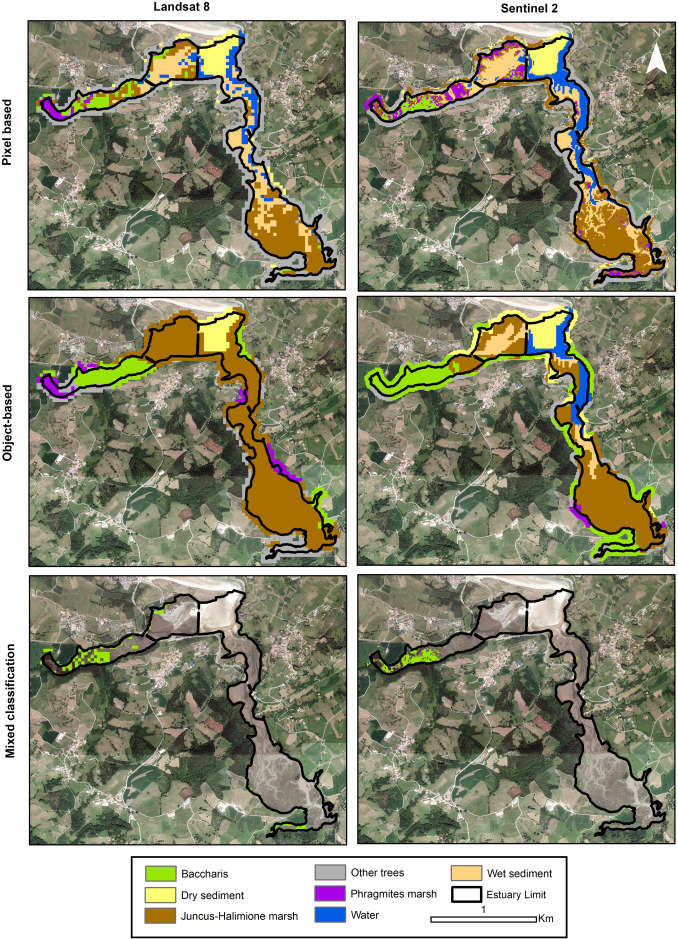

7 Week 7: Classification I
7.1 Summary:
Three major methods of image classification are defined for us; unsupervised, supervised, and object-based. The unsupervised method is pixel-based, where pixels are grouped into clusters based on their common properties and then manually classified with land cover type. Clustering can be done with k-means or ISODATA. I used k-means clustering in a rather different context last term so I find it interesting to see it be used on imagery here! The supervised method is also pixel-based, but instead of labelling clusters after they are formed, representative samples of each land cover type are used as training data and then applied to the whole image (excluding, I hope, the training sites in order to not influence the accuracy data). Different algorithms are used in classification, with Maximum Likelihood and Support Vector Machine being the ones I think I have seen the most before. Finally, object-based classification groups similar pixels into representative shapes (or objects) based on texture, colour, shape, or even proximity to other objects. This method also requires training. GISGeography states that this method is the most successful of all three, but only when image resolution is high enough.
7.2 Analysis
I found an article that combined different methods of image classification to track the spread of an invasive species. In “Mapping estuarine vegetation using satellite imagery: The case of the invasive species Baccharis halimifolia at a Natura 2000 site.” by Calleja et al, supervised image classification as well as object-based methods were used to identify the invasive shrub species Baccharis halimifolia in Spanish estuaries. Seven types of land cover were identified, including B. halimifolia, and Support Vector Machine algorithms trained on 10% of the available data and then tested on the rest.
Then, object-based classification methods were used to separate the estuary into alike- and non-alike segments using the Meanshift Segmentation Algorithm.
Finally, the two methods were combined. Object-based classification was used to define the broad areas where B. halimifolia might exist, and then pixel-based classification used within those likely segments to pick out where it detected its presence. The researchers state their reasoning for combining these methods as to try to improve accuracy; by reducing the number of pixels to classify and the range of their values, the algorithm might be more capable of separating “spectrally similar” pixels into the correct categories.
Comparing the accuracy of the three classification methods shows the pixel-based to be most accurate overall, followed by the mixed method and then the object-based method. However, when looking specifically at identification of B. halimifolia instead of identification of all land-cover types, the mixed method was the most accurate.

7.3 Reflections
I’m curious as to how this ties in with deep learning image classification techniques, such as convolutional neural networks or recurrent neural networks. Would they be categorised as supervised and just used in the final algorithm stage similarly to how SVMs are currently implemented? I’m also interested by the methods used in the article I found to combine object-based and pixel-based classification. Though they were less accurate overall, they did succeed in their specific use-case of identifying the invasive shrub - which makes sense to me considering the specificity of their training. Perhaps similar methods can do better in targeted studies, rather than overall land cover classification tasks.
7.4 References
Calleja, F., Ondiviela, B., Galván, C., Recio, M. and Juanes, J.A., 2019. “Mapping estuarine vegetation using satellite imagery: The case of the invasive species Baccharis halimifolia at a Natura 2000 site.” Continental Shelf Research, 174, pp.35-47.
GISGeography (2023) Image Classification Techniques in Remote Sensing, GIS Geography. Available at: https://gisgeography.com/image-classification-techniques-remote-sensing/ (Accessed: 5 March 2024).